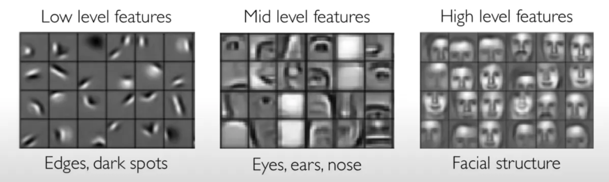

Why Neural Networks?#
Generally, we would like our machines to do what we want them to do. Computers were built to be programmed, and programming languages became the first way for engineers to tell computers what we wanted to happen. Programming requires diligent work; the computer will do exactly what we tell it to do and nothing more. From primitive languages like assembly, we have created higher-level languages, frameworks, and libraries to do all sorts of things.
The programming paradigm breaks down when we want a computer to do something that we can’t write down. The classic example was image recognition (see right). How can we program a computer to categorize birds from images? As humans we can recognize objects, but it’s clearly tricky to write down exactly what that process means.
Machine learning, and its modern form of deep learning, gives us tools to program computers with functions that we cannot describe manually. The trick is to provide examples of this function in the form of data points, and have the machines infer what the true function is. This shift marks the difference between instruction-following and learning.
Neural Networks#
Neural networks give us a way to represent functions via a set of real-valued parameters (also known as weights) that can be iteratively adjusted. Neural networks are expressive and can represent virtually any function with sufficient size. The neural network philosophy is to define a very general computation graph (i.e. multiplying matrices together), then find the correct parameters which give us the behavior we want. Inputs to neural networks are continous vectors (or matrices), and the output is continuous as well.
The backbone is of a neural network is a dense layer (also known as feedforward or linear layer), which are parameterized by a 2-dimensional parameter W. Given an input x, we will matrix-multiply them together to get output y.
def dense(W, x):
return W @ x
y = dense(jnp.array([[1, 2], [3, 4]]), jnp.array([1, 2]))
print('y =', y)
y = [ 5 11]
If our neural network is just a single dense layer, then it can only represent linear functions of x. Every output will be a linear combination of the inputs. This single-layer network is equivalent to performing linear regression.
Our first basic loss function will be mean squared error (MSE), which aims to minimize the squared distance between predicted outputs and the true outputs. We can actually find a W that minimizes MSE analytically:
x = jax.random.normal(jax.random.PRNGKey(0), (5, 10))
y = jnp.arange(10)[None] # (1, 10)
W = y @ x.T @ jnp.linalg.inv(x @ x.T).T # Analytical solution to minimize MSE.
mse = jnp.mean((W @ x - y)**2)
print('MSE:', mse)
MSE: 12.718398
or we can use gradient descent to arrive at the same answer:
W = jax.random.normal(jax.random.PRNGKey(1), shape=(1, 5))
loss = lambda W : jnp.mean((W @ x - y)**2)
for i in range(50):
grad = jax.grad(loss)(W)
W = W - 0.1 * grad
print('MSE:', loss(W))
MSE: 12.733752
Going Deeper#
A single dense layer can only represent linear functions. To improve this, we can stack layers on top of each other. The multi-layer perceptron (MLP) is a sequence of dense layers interleaved nonlinearities. A nonlinearity is an elementwise function that breaks the linear relationship between layers, and is neccessary to approximate complex functions. The most common nonlinearity is the rectified linear unit (ReLU), which amounts to clipping intermediate values at 0.
def relu(x):
return jnp.minimum(x, 0)
def mlp(x, W1, W2):
h1 = W1 @ x
h2 = relu(h1)
h3 = W2 @ h2
return h3
Dense layers traditionally involve biases as well, which are just additional parameter vectors which we add to the outputs at each layer.
def mlp_with_bias(x, W1, b1, W2, b2):
h1 = W1 @ x + b1
h2 = relu(h1)
h3 = W2 @ h2 + b2
return h3
Heirarchies of Layers#
A key strength of neural networks comes from heirarchical abstraction. When we stack layers ontop each other, each output becomes a linear combination of the previous ouputs (plus nonlinearity). We will call these intermediate outputs features. Deeper networks can build on features they have calculated earlier, making it easier to represent modular concepts. Think about image classification – we want the first layers to process raw pixels into edges, then edges into shapes, shapes into concepts, and finally concepts into a class label. Neural networks embrace this heirarchical form.

source: MIT 6.S191
A Network of Components#
Part of the beauty of neural networks comes in how easily they can be composed and combined. As long as the input and output sizes of layers match, we can compose them together to make a larger network. The kinds of architectures we use today (e.g. residual networks, transformers) are all built of small modular components.
The modular form of neural networks will also be the trick to efficiently optimizing, as we will see in the backpropagation section.